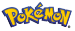

De: La Frikipedia, la enciclopedia extremadamente seria.
De: La Frikipedia, la enciclopedia extremadamente seria. De: La Frikipedia, la enciclopedia extremadamente seria.
| |
Hay frikipedistas que creen que este artículo debería ser fusionado con Yamcha. |
|---|
| De la serie bichos dentro de bolas: | |
| Magikarp | |
|---|---|
| Nombre | Magikarp |
| Especie | Pokémon |
| Apariencia | Un pez. Punto. |
| Hábitat natural | hagua |
| Localización | pokebolas, en grupos de 2 a 999 |
| Tipo | |
| Habilidad | Nada (ambos significados) |
| Pokemonización | Pescao Anti-morosos |
| Número | Para aburrir. De hecho, aburre solo al verlo. |
«Pero...¿va en serio?»
~ Programador de Magikarp en el momento de recibir el encargo de Shigeru Miyamoto
«Venga, de verdad, ¿quieres que diseñe un laberinto o algo?»
~ El mismo programador cuando le dicen que va en serio
«¡Sois unos cabrones, no podéis hacerme esto!»
~ El mismo desgraciado solo que ahora sí se lo cree
«Ajjjjj »
~ El programador se suicidó, eso sí, después de acabar el trabajo como buen japonés trabajador.
«Te vendo un Magikarp por 1000 leuros»
~ Trueque entre Ash Ketchum intentando deshacerse de su inutil pokemon, le salio bien, Ralph Wiggum acepto su oferta.
«¡Soy el mejor entrenador!»
~ persona dawn mostrando su equipo pokemon de solo magikarps (incluida la caja N° PI)
«¡Han picado! ¡Menuda mierda, solo es un pene rojo! Ah no, es Magikarp.»
~ Tú Pensande en ¿qué coño es esto?
«¡Ey, te vendo un Magikarp por 500 pokeleros»
~ Cómico Anónimo residente en el Monte Lunar.
Magikarp es un pescao con cara de Pokémon, o Pokémon con cara de pescao, según se mire, cuya meta en la vida es mirarte sin parpadear de una forma un tanto inquietante, que acabes creyendo que le debes pasta y se la des. Esto ha convertido a los Magikarp en los pokémon más ricos de los siete mares y los mas fuertes de los juegos pokemon, por lo que algunos han empezado a forrarse el lomo de oro. Sus ataques, aparte de la ya mencionada manera de mirarte, consisten en salpicar. Si lo echas al agua salpica. Si lo llevas al desierto salpica. Si lo miras salpica. Si le devuelves la pasta salpica. Si lo matas de una forma sangrienta salpica.
Este pescao es un nostálgico, por lo que picará sin remedio en cualquier caña con un estilo retro o simplemente vieja. Si lo capturas, lo lógico es pensar que mirará a tus enemigos y acabarán aflojando pasta. Sin embargo esto no ocurre. Está por determinar si no tienen leros o simplemente que Magikarp sólo te mira mal a ti. Si, solo te miran mal a tí
Ninguna, bueno, enrealidad es un juguete sexual y muñeco antiestrés: no siente dolor, y se corre el rumor de que si salpica a muchos enemigos en los ojos mientras nada en vinagre, amoníaco o zumo de limon, durante un período estimado en 4609620457160395860435620743xaños, se transformará en un bicho gordo acojonante y muy fuerte, de hecho, se consideraría un arma de destrucción más IVA(16% 18% 21% joder cuanto cambio ). Se cree que el rumor es falso y que lo difundió Nintendo para que Magikarp apareciese en TODOS los juegos de Pokémon.
Sí esperas, en 50 años se convertirá en Tirados Gyrados, pero si no tienes tiempo, como una persona con vida social, Cambialo por Arceus o cambialo por una entrada de Justin Bieber (aunque valdría mas el Magikarp que la entrada)
Es el mejor Pokemon...a la plancha...
Se rumorea que Magikarp es el Dios de los Pokemon. Magikarp creo a los Pokemon, y todos le deben pasta como deuda de darles su asquerosa vida. Hay muchas teorias acerca de Magikarp y porque creó a los Pokemon. Unos dicen que fue por el mero hecho de conseguir pasta, otros dicen que fue porque le excitaba y otros dicen que para salpicarles. Magikarp posiblemente a simple vista puede parecer un Pokemon de mierda, pero esconde un potencial secreto. Si te salpica, mueres. Si te mira, mueres. Si le debes pasta, mueres. Si le capturas, mueres. Tambien se rumorea que para capturar a este Dios Pokemon, se necesita una caña vieja. Se sabe que el combate más largo de la historia fue Magikarp vs Metapod. Metapod solo sabía fortaleza, pero acabó ganando a Magikarp.
Si lo lanzas puedes noquear de un solo ostiazo y si se te acaban las salpicaduras usa un ataque mas débil que tacleada.
Si salpica mucho puede incluso atravesar montañas de un salto, esto es solo uno de los ejemplos del supremo poder de Magikarp. También hay muchas posibilidades de que una Salpicadura haga daño infinito.
También, si llevas en tu equipo Pokémon 6 Magikarps, te asegura la victoria, y no solo eso, también destruiría la raza humana con su infinita fuerza. Esto último hace mucho era solo un rumor, pero los científicos de aquella época comprobaron esto en Marte, y terminó acabando con todos los marcianos existentes en un solo combate, y es por esto que hoy en día se procura nunca más usar 6 Magikarp en un mismo equipo.
Es un pescao y no es nada entretenido. Ni siquiera matarlo es divertido. Que sí, que cargárselo está chupao, pero cuando te sueltan más de dos de una tacada cansa, y existen carne y el pobre bichejo es alergico al agua y al aire, su salpicadura en realidad es un ataque epileptico como sintoma de su alergia ya que tiene Syndrome de Dawn. Su banda favorita es Syndrome de Dawn y Dawn es su hermana . También se sabe que la única batalla que ganó fue contra Yamcha. Tambien se dice que magikarp es el unico pokemon en el estado salavaje que se ecuentra al nivel 100.
|  | ||
|
Entrenadores
Pokémon
|
Autor(es):